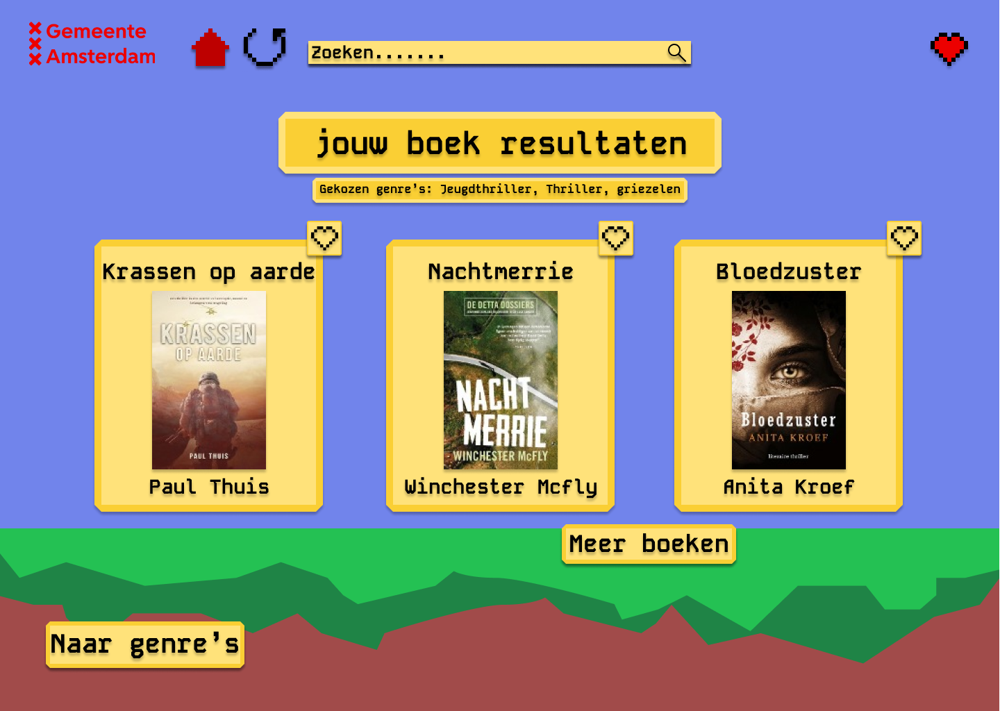

01 · UX / Interaction Design
Haak-app
Een digitale omgeving voor haakliefhebbers waarin projecten, patronen en community samenkomen.

Vierdejaars Communication & Multimedia Design student met een interesse in interaction design, visual design en creatieve digitale ervaringen.
based in the Netherlands
Scroll ↓
01 · UX / Interaction Design
Een digitale omgeving voor haakliefhebbers waarin projecten, patronen en community samenkomen.

02 · UX / UI Design
Een dashboard waarin informatie en persoonlijke inzichten overzichtelijk samenkomen.

03 · UX / Visual Design
Een digitaal concept waarin structuur, interactie en visual design samenkomen.

04 · Visual / Responsive Design
Een responsive ontwerp waarin visual design, typografie en verschillende schermformaten samenkomen.

Ik ben Jaydey, een vierdejaars Communication & Multimedia Design student. Ik vind het interessant om ideeën te vertalen naar digitale ervaringen die niet alleen goed werken, maar ook karakter hebben.
Mijn interesses liggen ergens tussen interaction design, visual design, UX/UI en front-end development. Ik vind het leuk om verschillende disciplines te combineren en nieuwe dingen uit te proberen.
Neem contact op →